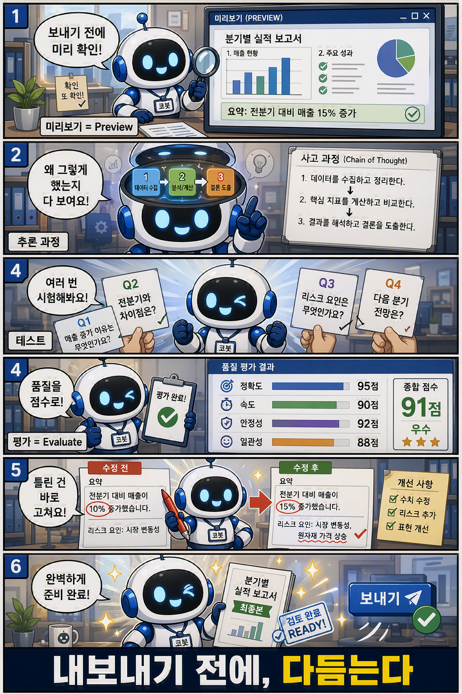

5부. 다듬는다 — 테스트하고 평가한다

학습만화로 먼저 만나기 — 미리보기·추론·테스트·평가로 내보내기 전에 다듬는다.
2·3·4부를 지나며 우리는 코봇에게 정체성과 전문성, 자료와 손발을 차례로 붙이고, 절차를 맡을 플로봇 파트너까지 엮었다. 지침으로 누구인지를 정해주었고, Skill로 일하는 법을 가르쳤으며, 지식으로 교과서를 쥐여주고, 도구로 실제 행동까지 맡겼다. 코봇은 이제 제법 그럴듯한 동료의 꼴을 갖추었다. 그러나 "붙였다"가 곧 "잘 된다"는 아니다. 만든 사람의 머릿속에서만 멀쩡할 뿐, 실제로 의도대로 도는지는 아직 아무도 모른다.
5부는 만든 것을 다듬는 단계다. 다듬는 일은 세 겹으로 이루어진다. 먼저 손으로 확인한다(Preview). 작성 화면 옆에서 직접 말을 걸어 의도대로 도는지 본다. 다음으로 들여다본다(추론 관찰). 코봇이 왜 그렇게 답했는지 그 사고 과정을 펼쳐 읽는다. 마지막으로 숫자로 검증한다(Evaluate). 질문과 기대답변을 모은 세트로 일괄 시험해 품질을 점수로 본다.
세 가지는 중복이 아니라 순서이자 깊이의 사다리다. 한눈에 정리하면 이렇다.
| 단계 | 목적 | 언제 쓰나 | 결과 |
|---|---|---|---|
| Preview (16장) | 손으로 확인하기 | “이게 맞나?” 감을 잡을 때 | 정성 평가: 그럴듯하다 / 이상하다 |
| 추론 관찰 (17장) | 왜 그렇게 했는지 읽기 | “왜 이 답을 했지?” 의문이 들 때 | 진단: “아, 지침을 잘못 이해했구나” |
| Evaluate (18장) | 품질을 점수로 | “배포해도 될까?” 최종 확인 | 정량 평가: 기준 점수를 넘었는가 |
처음에는 Preview만으로 충분하다. 같은 실수가 반복되면 추론을 들여다보고, 안정화 단계에 이르면 Evaluate로 품질을 숫자로 본다. 손의 감각에서 출발해 머릿속을 거쳐 숫자에 닿는 학습 곡선이다.
솔직히 말하면, 이 단계는 제품을 만드는 라이프사이클에서 가장 자주 건너뛰는 대목이다. 데모가 한 번 잘 돌면 다 된 것 같고, 빨리 내보내고 싶은 마음이 앞선다. 그러나 우리가 만드는 것은 한 번 보여주고 마는 장난감이 아니라, 회사가 실제로 굴릴 동료다. 사람을 새로 들이면 수습 기간을 두고 일을 시켜보며 가르치듯, 코봇에게도 그 과정이 필요하다. 다듬지 않은 코봇을 세상에 내보내는 것은 검증되지 않은 신입을 첫날부터 고객 앞에 세우는 일과 같다. 5부는 그 수습 기간을 어떻게 보내는지에 대한 이야기다.